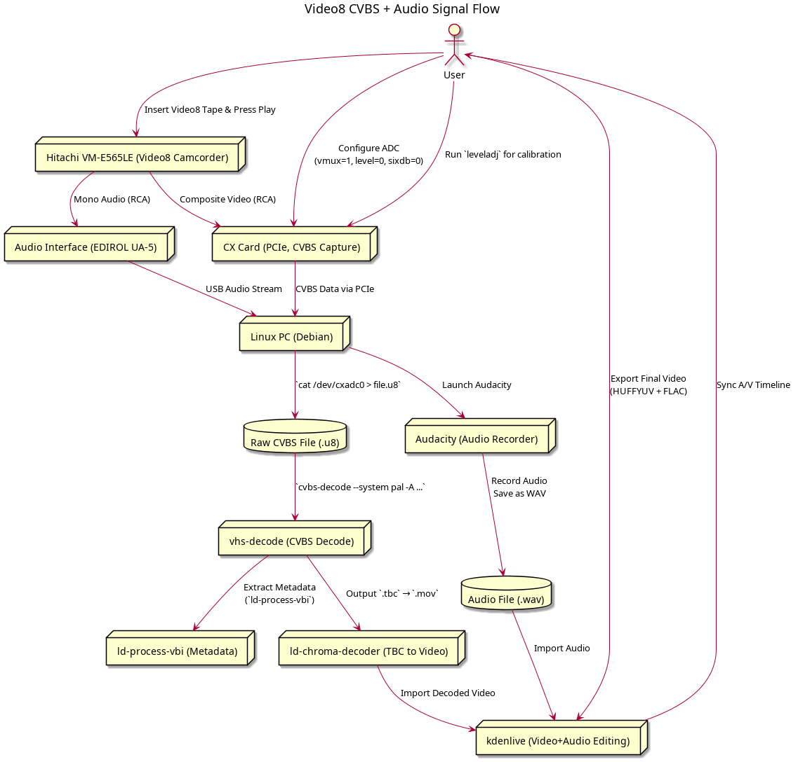

Video8 Composite Signal Capture and Decoding Using CX2388x-Based PCIe Card
Date: 2024-04-05
Probably no one cares, as the vhs-decode wiki is already so well documented ;) ... but I decided to write this down anyway. Mainly for future personal reference and partly to share an actual practical approach. Maybe also to showcase/provide an update of what I’ve been busy with over the last few months to my blog readers.
Why
So to start with, I had a bunch of old Video8 tapes sitting around. The majority of them being footage of me as a kid, a few other from my teenage years and some punk gigs in Thessaloniki. I did not want to invest hundreds of euro on the process so I focused on capturing/decoding them on a budget. 10 years ago a dodgy lad in Bit-Bazaar in Thessaloniki, Greece told me that using actual task-specific-hardware to turn video8 tapes digital is "better". He had a Video8-DVD Combo Recorder. Nonetheless, this costs a lot of money, is rare, and to be honest it also abstracts away the whole signal chain. I do not really get to see what is happening under the hood. I wanted something a bit more hands on that would let me understand what is actually coming off the tape and how it gets turned into a digital file. After some investigation I discovered vhs-decode. Pretty cool stuff. Super-duper well documented. Looking at all this through signal processing coloured glasses would be something I would be keen to explore. I was not planning to go full expert mode and deep dive but I figured I would at least play around a bit with arm-floaties on but feet in the shallow waters xD
Equipment
 |
CX ADC PCIe Capture Card
Basic white variant card with CX2388x chip. Used with `cxadc` Linux driver. No mods applied yet during capture, but I experience frame dropping when it works a bit too hard (due to thermal throttling I would guess).
|
|
Hitachi VM-E565LE (PAL8 Camcorder)
Used as playback for decoding Video8. Native PAL output with mono RCA audio. According to the docs using the original camcorder helps improves quality (it is the original in this case).
|
|
|
EDIROL UA-5 Audio Interface
24-bit/96kHz USB interface. Audio was recorded in 16bit/48kHz using Audacity. Runs with ALSA usb audio class drivers directly (snd_usb_audio module).
|
The camcorder I used for playback was a Hitachi VM-E565LE, a PAL Video8 model with an onboard LCD screen. Based on the the official documentation using the original camera or the exact model that recorded the tape is always preferred. It is better optimised for playback especially when the tapes are old or worn which is always pretty much the case nowadays. The Hitachi camera outputs standard CVBS video through RCA and mono audio via another RCA. CVBS is a single channel signal that combines a few elements of a video stream into a waveform. It includes Luma (Y) which is the brightness or black-and-white portion of the image. Chroma (C) which is the color information. This is modulated onto a subcarrier (4.43 MHz for PAL). It also has some horizontal and vertical sync pulses used for timing as well as blanking intervals. The chroma is modulated onto a lower frequency and then summed with the luma and sync signals.

Initially I thought the audio was HiFi FM and tried capturing it with the CX Card and decoding it (LOL). However, after looking at the manual and reading monophonic audio (not that "mono" provides any useful information itself) something clicked and I tried to just stick the output into the audio interface and to monitor the input signal. This way I realised my camera outputs linear mono audio not HiFi FM. So I simply captured the audio using the audio interface.

My audio interface is the EDIROL UA-5. It can record 24bit/96kHz. I bought it for 30 euro used from Kleinanzeigen. Excellent build quality, it has standard compatibility with ALSA usb audio class drivers therefore it is plug-n-play. I recorded the audio in Audacity at 16bit/48kHz mono. Honestly, not sure what a modern > 100 euro Focusrite/Behringer/whateva would offer over this. It has even a cool top panel block diagram of the signal path hehe ;D
Video Capture: The CX Card
The CX capture card is the white-label PCIe to AV expansion board. Model: 23880/23881, Conexant CX25800-11Z is the chip if that plays any role. Functionality should be the same for all different chips used says the seller. I bought it for 25 Euro approximately. It uses the CX2388X (does not say X on the PCB) chipset. The chipset is supported by the cxadc driver. Currently I am using it without modifications. I am planning to add the cooling mod soon. I suspect some dropped frames are due to overheating. Potentially the default crystal oscillator might also cause this. Nonetheless the docs state it really clearly: "Faster sampling data output = more heat = shorter hardware life and possible loss of capture data due to overheating."
The cooling mod involves using a 40x40mm passive heatsink and a fan. I will be doing this soon.
|
Cooling Mod (Heatsink)
Passive heatsink with fan to be added in order to reduce thermal throttling and minimise frame drops. This is the recommended mod for CX cards.
|
As for the crystal mod the stock 28.636MHz crystal can be replaced with a 40MHz ABRACON oscillator according to the docs. This improves the sampling rate and SNR up to 40Msps on 8-bit capture. Stability may also improve. Might attempt this later.
Workflow overview
I created this workflow diagram to visualise the complete Video8 signal capture and decoding path using the CX ADC card. It showcases the process from HW setup and Composite capture to decoding and audio video synchronisation.
-
Set capture parameters
Make sure digital gain is off and level is at 0:
sudo zsh -c 'echo 1 > /sys/class/cxadc/cxadc0/device/parameters/vmux'sudo zsh -c 'echo 0 > /sys/class/cxadc/cxadc0/device/parameters/level'sudo zsh -c 'echo 0 > /sys/class/cxadc/cxadc0/device/parameters/sixdb'ls /dev | grep cxadc | sed -e's/dev//g' | xargs -I % bash -c 'find /sys/class/cxadc/%/device/parameters | grep -v parameters$' | xargs -I % bash -c 'echo -n "% " && cat %'Start the camcorder playback
Then immediately run the level adjustment:
~/local/bin/leveladjRecord
Raw capture:
cat /dev/cxadc0 | pv > CX_Card_28msps_8-bit.u8cat /dev/cxadc0 | flac --fast -16 --sample-rate=28636 --sign=unsigned --channels=1 --endian=little --bps=8 --blocksize=65535 --lax -f - -o capture.flac.u8 and compress later.
Decode
Once recording is done, decode with:
cvbs-decode --debug --threads 8 --system pal -A --cxadc capture.u8 capture_output.tbc file.
VBI Processing
ld-process-vbi capture_output.tbcVideo Export
ld-chroma-decoder --decoder transform3d -p y4m -q capture_output.tbc capture_output.movSync Audio
In a video editor (e.g., Kdenlive) align the first visible frame with the first audible signal. Use tape cuts or loud audio transients to help with synchronisation. On one tape in my collection I smack hard an anvil (I hope that is the correct word in English/I mean "αμόνι" in Greek) as a 3-year-old with a hammer. That was perfect for syncing. My export settings:
Video codec: HuffYUV (lossless)
Audio codec: FLAC
Problems I Faced
Dropped Frames: On some captures the video capture stops unfinished. This happens when the FLAC frame fails to decode. Root cause could be either heat or unstable sampling clock. Raw capture can reduce risk and allows for (simpler) capture resuming.
Audio Confusion: Initially expected HiFi FM, but found my camcorder produces output of an standard analog mono signal (LOL once again)
Partial Decoding: Using --start flag in cvbs-decode or ld-chroma-decoder sometimes fails silently if the frame count is not aligned. Make sure you are using valid frame counts. ld-analyse file.tbc can be of great help ;)
Syncing: Syncing manually works fine but needs some attention. Small errors can lead to drift. It would be cool if it could be somehow automated. Clockgen mod keeps tapping me on the shoulder but I know the moment I say "hi back!" I know I will be spending my afternoons during the following month on it :|
Epilogue
Not much to say to be honest. I am only so happy I had the chance to watch all this family footage and create a small archive of punk rock gigs in Thessaloniki (see Video 1 & Video 2). Finally, massive thanks to Harry Munday the guy who not only most of all of this but also designed half the hardware and somehow still has time to keep optimising and helping people. Legend.
Θεσσαλονίκη 2013 - 2016
Date/Ημερομηνία: 2024-03-08
Θυμάμαι εκείνο το live στους ANEF που διάλυσα τον αστράγαλό μου (βλ. 08:25) και ταλαιπωρήθηκα για χρόνια :( Όπως και την ενέργεια τον θυμό (και το άγχος βσκ) στην συναυλία της τάξης (βλ. --> παρακάτω).
Κανείς από εμάς δεν φαινόταν να νοιάζεται για τίποτα τότε xD
Αναρωτιέμαι τι να ήταν αυτό που μας ένωνε εκείνον τον καιρό βέβαια. Ίσως η οικονομική κρίση που μας έκανε όλους ίσους, η οργή μας απέναντι σε ένα σύστημα που μας καταπίεζε, η ανάγκη μας να ξεφύγουμε από τα στερεότυπα της κοινωνίας - της θρησκείας - του σχολείου;
Δεν ξέρω. Ξέρω μόνο ότι ήμασταν ενωμένοι. Χωρίς να περιμένουμε τίποτα και χωρίς να έχουμε τίποτα να χάσουμε.
Στην συναυλία οι γονείς ήταν σε σοκ! Να παρακολουθούν τα παιδιά τους να ουρλιάζουν στίχους για την άρρωστη σύγχρονη αστική κοινωνία και τα θύματα της πρέζας. Στίχοι σαν αυτούς που είχαν γραφτεί τότε:
"Σε μια κοινωνία προβάτων τυφλών
Σε μια κοινωνία ανθρώπων καπιταλιστών
Τα media σε τάισαν φόβο και σκατά
κι όλη μέρα δούλευες για άλλου τα λεφτά
Μεταμοντέρνα αστική αρρώστια
Μεταδοτική κοινωνική αρρώστια " (M.Ν.)
"Πρέζα, αρρώστια, δεν φταίει το παιδί
Μόνος του ήτανε, δεν είχε επιλογή
Κανένας δεν νοιαζότανε πού ήταν και πού πάει
Μόνος πάλευε για ακόμα μια ζάλη ... ÄÄÄ!" (K.Β.)
Αυτές είναι οι στιγμές που δεν θα ξεχάσω ποτέ αλλά και που δεν θα ξαναζήσω :'( Θα συνεχίσω να τις κάνω show-off σε άκυρους που γνωρίζω κ' θα νοσταλγώ και θα εύχομαι να μην είχε περάσει ούτε ένα λεπτό από τοτε. Βσκ πως μένω για πάντα 16;
Καμιά φορά πετυχαίνω παλιούς γνωστούς, φίλους, έρωτες. Είμαστε πλέον συγκρατημένοι, απόμακροι. Σαν να μας κρατάει κάτι πίσω και σαν να φοβόμαστε να αφεθούμε. Λες και δεν ζήσαμε μαζί ξέρω γω.
Φίλε.. μέσα μου θα θυμάμαι πάντα την εποχή εκείνη. Όταν η Θεσσαλονίκη ήταν μια πόλη που έβραζε. Μια εποχή που το πάνκ ήταν η φωνή μας. Μια φωνή που δεν φοβήθηκε να ουρλιάξει ;)
Dresden in Fog and Rain
Date: 2024-11-13
Starting with a bit of history. Those who knew me before 2019 might remember me experimenting with cheap, manual Russian analog cameras from the late '60s and early '70s. One of my favorite shots both for its result and technical complexity is the one below. Really bad lossy digital compression I know. I could update it when I find the original print ... For now, enjoy as much as this heavily compressed copy allows.

This was taken while I was hanging out along the Thessaloniki coast crossing the bridge over Nikis Avenue near the Macedonian Palace Hotel. At the time I wanted to experiment with longer shutter speeds but had not managed to do so. I was carrying a shoulder bag with my equipment. Two Helios lenses, filter lens, and more. I found a stable position for the camera literally on the ground and connected the Cable Release / Shutter Remote. During a 10 second exposure I used three coloured transparent overlay filter sheets (yellow, red, and blue) swapping each filter every three seconds to capture varied colours in the car headlights. I left the last second without a filter to add a natural headlight colour. The camera used was a Zenit E with a Helios 44M-4 58mm lens, f/16 aperture, and a 10 second exposure.
Its been years since I have given up taking pictures as it was way too expensive for a student budget and I was too busy studying and moving to a new country every 6 months. Nonetheless, 2 days ago Dresden was enveloped in inreased fog and rain. This is a combination I am particularly fond of. I looked out my window as night fell and saw the headlights. It reminded me of the time being a BSc student experimenting with my camera along Thessaloniki costal lane.
I used my not-so-fancy and not-so-vintage Xiaomi Redmi 8. I switched to manual mode, increased the ISO since it was nearly dark, opened up the aperture to allow increased field depth, and set the shutter speed to a maximum of 13 seconds. Here is what I got:

NEIPA Hack
Date: 2024-10-28
I thought I’d start my first blog post with something casual... how about a beer recipe?
A few years ago, I composed this recipe specifically for my birthday party. There would be a lot of people, so what’s better than a bit less than 23 lt. of hacky-hoppy New England IPA?
In a few words...
To start by clarifying, I don’t have any equipment for all-grain brewing, so most of the time, I am limited to beer kits. However, I kind of missed that fresh hops taste from the last time we brewed with my pal John using his all-grain equipment, and in general, I was looking for anything extra-hoppy really...

A pint of NEIPA Hack brew.
While not having the means to brew a proper NEIPA, I figured out a hacky way to brew something close to it in appearance and flavor. My fermentation bucket has a 23lt batch size, and the largest cooking pot my mom has can fit approximately 5lt. I was spending that summer with my parents. Usually, the kits I used to brew produce some kind of “sterile” beer flavor, kind of flat. Even IPA kits don’t taste as fresh as the batches we used to make from scratch with my friend John. We used to mash using Brew In A Bag (BIAB) all-grain technique with his equipment. Without all-grain equipment, my idea was to brew a total of a 23lt batch, with 5lt BIAB’ed in my mom’s pot and then mixed into the kit’s 18lt.
Mashing
During the mash process, I used 1 kg of Malt Pale Ale (Weyermann) grains and 0.5 kg of Flaked Oats to obtain the typical hazy colour. I raised the water temperature to 73 Celsius, expecting that when the oats and grains were added, the temperature would drop to around 67 Celsius, ideal for the mash to allow conversion of complex sugars in the grains into simple ones that yeast can feed on. I quickly removed it from the stove, put the lid on, and wrapped the pot with 5-6 towels to prevent heat from escaping. I left it sitting for exactly an hour. After an hour, I filtered out the grains from the wort using a standard kitchen strainer and boiled for 15 minutes. During the last 2-3 minutes I used 80 grams of Cascade hops and whirlpooled it. I had calculated 18 IBU for the bitterness level. While boiling, I prepared the kit concentrate in the fementation bucket. When the 15 minutes of boiling were completed, I used the 100 Celsius wort to dissolve the kit concentrate in the fermentation bucket (HDPE food-grade plastic), as well as approximately 3/4 of the dextrose suggested by the kit, considering the additional sugars from the mashing. Then, I used cold water to bring the temperature down while filling all the way up to hit 23lt.
Temperature control during fermentation
That summer I spent at my parents’ house. It was extremely hot throughout Greece and going out was impossible. So I thought I’d spend time brewing my birthday beer. The main issue with the heat was fermentation temperature. For an IPA, I wouldn’t risk it going above 21-22°C, especially a heavily hoppy one. My dad has bees and used a metallic stainless steel tank as a honey extractor years ago. I took it and filled it halfway with ice-cold water. Then I placed it in the basement, which is naturally cooler than the ground floor. I submerged the fermentation bucket in the ice-water-filled tank and covered the top of the fermentation bucket with water-soaked towels. Below there is a picture of myself cleaning the metallic tank to use it for the first time. The first time I used the tank this way was to cool down the fermentation temperature of a Weizen beer to 17°C, to encourage “clove” flavors rather than “banana.” Initially, I considered using it as an all-grain container but never moved forward with this plan.

Metallic tank as a cooling method in the fermentation.
Fermentation
At this point, I had the metallic tank and mixture ready at 19°C. I sprinkled 11.5 gr of generic Fermentis SafAle US-05 (optimal temperature 20-25°C) and closed the bucket top, wrapping the fermentation bucket with wet towels. I took one sample and measured the Original Gravity (OG) at 1.051. Exactly as I had calculated! The fermentation was insanely fast, hitting a specific gravity (SG) of 1.014 in 4 days. During active fermentation, on day 5 I opened the lid and added the dry hops. By day 7, the Final Gravity (FG) reached 1.011. I left it for an additional 4 days to ensure fermentation was complete. 11 days total. On day 11, I manually bottled 23lt, adding some additional dextrose (160 gr) to increase the carbonation level aiming at producing a two-finger white head.
Dry hopping
Some words about the dry hopping. To wrap up other than the metallic tank DIY stuff above I did not do anything fancy throughout the fermentation and dry hopping. In the journey of hop experimentation and while I would not be able to distinguish one hop variety from another when sampling NEIPAS or heavy-hopped TIPAs or DIPAs I decided for the dry hopping to be of a single variety (almost). I don´t know if that can be considered NEIPA in the end but yea. Nevertheless, I used 30 gr simcoe for dry hopping with some remains (approximately 20 gr) of cascade from the whirlpool. Cascade was cheap, simcoe was expensive and I remeber it killed my wallet as of the time being on very tight student budget and living in Greece where for some reason shipping prices are outrageous. Therefore I guess it kindda makes sense why I didn´t want to whirlpool the good/expensive stuff. Poor man´s NEIPA it is then!. Below you can see the expected flavour pallete created by the combination of the hops, unfortuantely it is in Greek, but overall simcoe was expected to provide some floral, citrus, and berry notes while cascade was adding some mint while enhancing the citrus and berry notes. Keep in mind that simcoe is the dominant here as it was used in higher quantity. I did not take any precations to mitigate oxidisation other than manifesting for it, I guess I was lucky not to end up with amber coloured oxidised beer. Well, that´s all about it really.
Some words about the dry hopping. Aside from the DIY metallic tank setup, I didn’t do anything fancy during fermentation and dry hopping. In experimenting with hops and while I wouldn’t distinguish one hop variety from another when sampling NEIPAs or heavily hopped TIPAs or DIPAs, I decided on a single variety (mostly) for the dry hopping. I don’t know if that can be considered NEIPA, but well... Regardless I used 30 gr Simcoe for dry hopping with some remnants (about 20 gr) of Cascade from the whirlpool. Cascade was cheap, Simcoe was expensive, and I remember it strained my wallet as I was on a tight student budget in Greece where shipping prices are -for some reason- high. So I guess that’s why I didn’t want to whirlpool the expensive stuff making it a poor man’s NEIPA I guess! Below, you can see the expected flavor palette created by the combination of hops. Simcoe was expected to provide floral, citrus, and berry notes, while Cascade added some mint, enhancing the citrus and berry notes. Simcoe was dominant here as it was used in higher quantity. I took no specific precautions to prevent oxidation other than manifesting it. Luckily it didn’t end up as amber-coloured, oxidised beer. That’s about it, really.

Simcoe: expected dry hopping flavour pallete.

Cascade: expected dry hopping flavour pallete.
An important note here is that I took a lot of precautionary measures using Chemipro OXI disinfectant solution throughout fermentation, dry hopping, and transferring from one container to another. I systematically disinfected the fermentation bucket, the metallic tank for the "Bain-marie," the tubes, and finally the bottles to prevent any yeast infections.
The important bit... sampling!
At the birthday party, everyone loved the beer. People knew it was homebrewed and were surprised by the extra fresh kick it had. John my pal I used to brew with, described it as "the beginning of a new era in our collaborative homebrewing". It’s sad that we both left Greece a few months later and haven’t brewed since. Hopefully, we’ll get back to it! I still remember his excitement and feedback from when we first tried it.
To wrap up, I can confidently say that it was pretty close to a standard session NEIPA, given the lower expected ABV of 4.4%. Fresh, very strong citrus aroma and kick, mild bitterness on the finish / back end, refreshing, good levels of carbonation, and generally rich in its palette, maybe a bit “aggressive.” Unfortunately, by the second week, it started to flatten and became more bitter as the hops particles settled in the bottles. By the 4th week, it had a strong hops aftertaste and was more bitter, but it was still drinkable. Cheers!